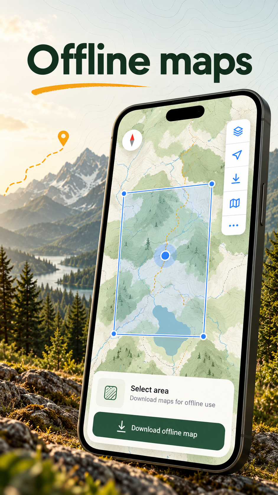
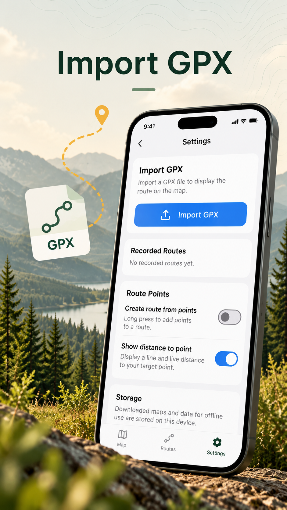
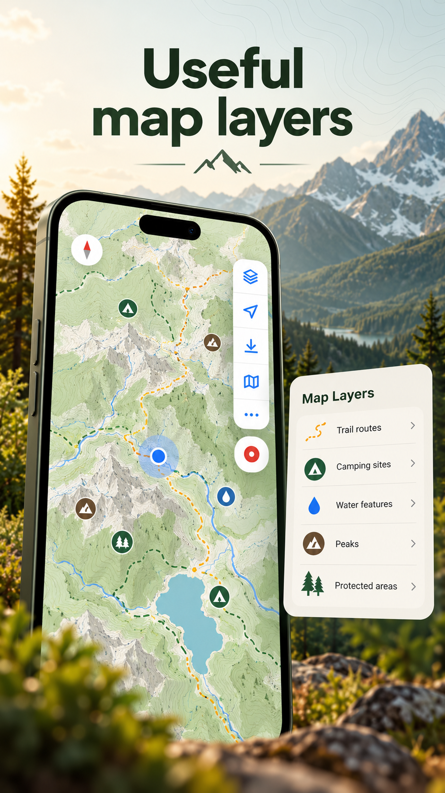
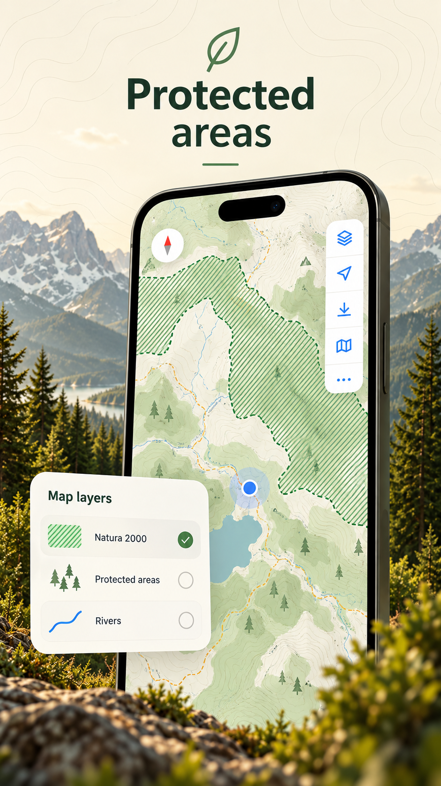

Stiluri de hartă
Alege harta potrivită: outdoor, topografică, satelit și altele.

O aplicație LowRange Labs
Explore beyond the road.
Outroads te ajută să explorezi mai departe, cu hărți detaliate, trasee GPX, înregistrarea ieșirilor și informații utile pe hartă — toate într-un singur loc.
Despre aplicație
Alege harta potrivită: outdoor, topografică, satelit și altele.
Importă fișiere GPX și afișează traseele direct pe hartă.
Înregistrează pe unde ai trecut în timp ce explorezi.
Vezi arii protejate, campinguri, râuri și alte repere.
Descarcă hărți înainte de plecare, când semnalul e limitat.
Înțelege unde ești și în ce direcție mergi.
Ce poți face

Selectează zona care te interesează și păstrează harta disponibilă și atunci când nu ai semnal.

Importă un fișier GPX pentru a vedea traseul direct pe hartă și pentru a-l avea la îndemână în explorare.

Adaugă context hărții prin informații despre trasee, camping, apă, vârfuri și alte repere utile.

Vizualizează ariile protejate pentru o planificare mai atentă a ieșirilor în natură.
Outroads
Disponibilă acum pe Android. iOS urmează în curând.
Înapoi la proiectele LowRange Labs